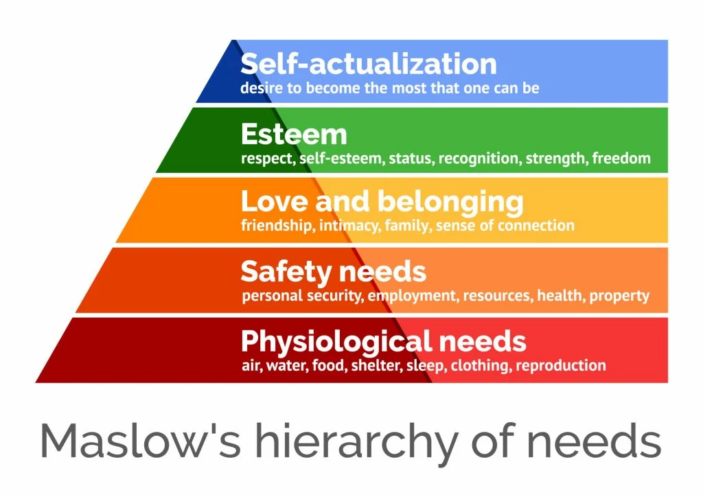

Values inform the decisions we make, and have a big impact on our work life. I recently did some thinking about what my work values are, and to explore how they've been met in past and present jobs I created a CodePen app to add a tangible, visual element.
This "work values hierarchy" model that I came up with is similar to Maslow's hierarchy of needs. In his model, Maslow says that people have a few different classes of needs, and that the foundational ones like having air, food, and water, need to be satisfied before it's possible to take care of higher needs, like connection and freedom.

Here's a rundown of the work values hierarchy model, in comparison:
- Everyone has a set of values that matter to them in a work context.
- These values can be arranged into a hierarchy.
- The values at the bottom of the hierarchy are foundational: satisfying them unlocks the ones above.
- The values at the top of the hierarchy are more transcendent: satisfying them achieves a higher order of job satisfaction.
Personally I've found it easy to identify my higher values in the past: enjoyment of a challenge, a need for variety, and a preference for autonomy. It took more reflection to figure out the less-flashy elements that are my foundational values, however, but this effort was well worth it.
Using my CodePen app I was able to look at my past jobs through the lens of this work values hierarchy, and rate how much each value was present in my day-to-day, on a scale from 0 to 10. I could then see how some had strong foundations, while others were a castle built in the clouds. It also gave me some insight on where I need to invest my energy and focus in order to create the work environment where my natural desire for high quality and challenging work can be satisfied.
Have you thought through your values, and how they might be arranged into a hierarchy*? Please feel free to edit the JavaScript "valuesList" variable to fill in your own values, and explore what shapes arise from the fulfillment of your work values in your past or current role(s).
*Tip: for arranging your values in a hierarchy, do a manual insertion sort by comparing one value with another, and asking yourself "does this value lead to that value, or does that value lead to this value?", and then positioning them so that the value below leads to the value above.